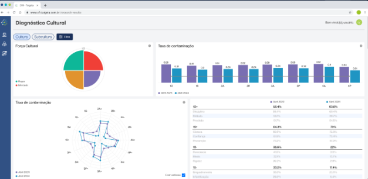
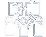
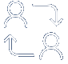

Conheça a
Metodologia CFR
Completa para entender, estruturar e evoluir a culktura organizacioinal com foco em execuçao da estrategia gerando resultados reais.

Metodologia Culture For Results©
Desenvolvida para conectar, estrategia e resultado, a CRF transforma percepçoes em dados, dados em informaçoes, informaçoes em decisoes e decisoes consistentes. Ao longo de 8 etapas praticas e integradas, mapeamos o que impulsiona ou bloqueia o desempenho e construimos uma cultura alinhada aos objetivos do negocio.
As 8 etapas da Metodologia CFR©, conheça:
01
Diagnostico: Levantamos dados comportamentais com agilidade e profundidade.
Revelemos padroes de pensamento, barreiras ocultas e alavancas de performance em cada area da orgainzaçao.
02
Arquitetura Cultural: Desenhamos a cultura ideal para sustentar a estrategia, com base em dados reais e nos desafios do negocio. Alinhamento claro entre visao, comportamentos e praticas do dia a dia.
03
PDCO (Plano de Desenvolvimento e Cultura Organizacional): Traduzimos as metas culturais o diagnostico em um plano tatico e estrategico, com açoes prioritarias, responsaveis e indicadores de avanço.
04
Comunicaçao: Criamos narrativas e rituais que fortalecem a cultura desejada e conectam as pessoas ao proposito e as mudanças propostas.
05
Governaça: Estruturamos a gestao da cultura com indicadores, cadencia e responsabilidades claras em um acompanhamento mensal por nossos especialistas que garantem movimento e direçao... Cultura deixa de ser discurso e vira processo.
06
Engajamento: Mapeamento o estilo cultural das lideranças, conectamos seu jeito de trabalhar com indicadores de agilismo, coerencia cultural e competencias. Envolvemos as lideranças e equipes de forma participativa e genuina, com açoes que geram pertencimento e ativam o comportamento desejado.
07
Treinamento: Desenvolvemos competencias e mentalidades alinhadas a cultura necessaria, com trilhas sob medida para cada publico.
08
ROI: Mensuramos o impacto da cultura nos resultados do negocio. Cultura passa a ser tratada com ativo estrategico, com retorno claro.
- Pesquisa totalmente anonima.
- Resultados em 5 minutos apos coleta de dados.
- Nao usamos amostragem, envolvemos todos da organizaçao.
Fundamentada e adaptada do modelo de Robert Quinn, Boris Groysberg, Jeremiah Lee, Jesse PRice, J. yo-Jud Cheng, Alvin Tofler e Hofstede.
A CFR vai alem da percepçao. Ela traduz a cultura em dados, decisoes e resultados.
Empresas que investem em cultura
podem ter os seguintes resultados:

Alinhamento da Cultura com a Estrategia

Reduçao de
turnover
Liderança
preparadas
Times
fortes
Marca empregadora
fortalecida
CONTATO
Solicite sua demonstraçao
Utilize o formulario abaixo para entrar em contato conosco
OU USE UMAS DAS OPÇOES ABAIXO:
É hora de colocar o
potencial das pessoas
em movimento

Boletim Taigeta da Cultura Organizacional
Receba periodicamente por e-mail.